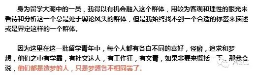
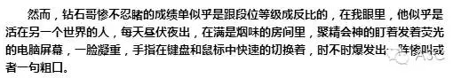
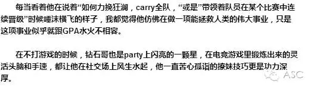
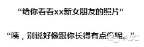
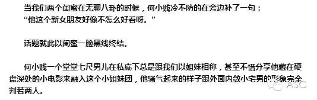
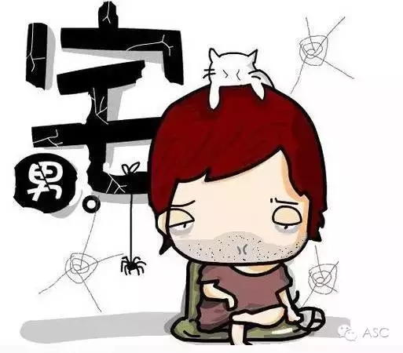
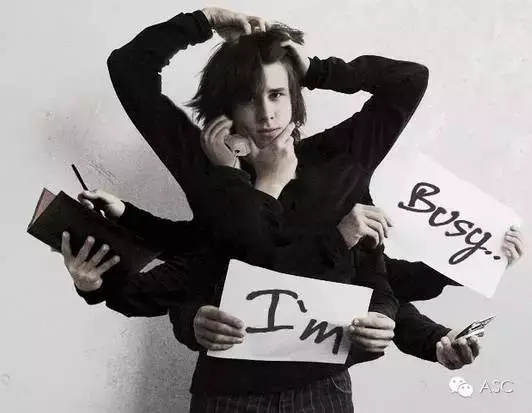

互惠动态
|
|
请你们闭嘴！留学生不是人傻钱多的熊孩子！
留学生这个群体，在国内经常被媒体冠以“人傻钱多”这样的帽子，好像就因为出身比较好，所以就一定不如国内的大学生们刻苦用功。
但是，出国党并不全是媒体眼中那种好逸恶劳的富二代，我们也有自己的梦想。究竟什么才是出国党真正的样子？有些剧情反转可能你永远也想不到。
不知道从什么时候开始，大部分跟留学生有关的新闻，不论是什么原因，留学生总会被冠以人傻钱多，有钱任性等等恶名。

Z是留学生中的学霸代表，有着一个学霸通常所具备的各种要素，不善言辞，独来独往，永远用逻辑跟你讲道理而不轻易表露情绪，面瘫症中度患者，格子衬衫，双肩黑色帆布包。
哦，对了，还有非CS专业不学。
每次跟Z的交流，似乎永远都是：
而Z永远是一副“这道题的解法这么顺其自然，行云流水，你怎么就解不出来呢”的恨铁不成钢表情。
Z的课外生活一般都是在学校里当tutor，实验室里当助手度过的，不管你怎么用羊肉火锅，狼人游戏，午夜ktv来诱惑，丝毫都不会动摇。
当然学霸总也有点小爱好，家境殷实的学霸Z是球鞋的狂热爱好者，甚至凌晨在店门口排队只为抢到那一双限量版AJXX.Z说：“我不是学霸，只是痴迷CS. 当然，我更爱AJ.”
Seven是留学圈中人称的钻石哥，并不因为他是九个手指戴满钻戒的暴发户，而是在风靡世界的电竞游戏lol中，他打到了众人膜拜的钻石段位。


Seven说：“我不是学渣，只是痴迷lol。 当然，我更爱party和撩妹。
闷骚宅男何小贱，在生人眼中乖巧，内敛，典型的模范三好学生形象，但是当混熟了之后，他话题终结者的嘴贱特点就暴露无遗。



但是何小贱的吃苦耐劳，任劳任怨也是无可厚非的，在学校饭堂里高强度的part－time工作，一站就是连着5，6个小时，饭堂里逼仄的空间和闷热的空气都是常人难以忍受的，但是他风雨无阻的坚持了几个学期，同时还低调的保持着超高的gpa.
何小贱说：“我不是两面派，只是有点小闷骚。当然，人家也是勤工俭学的低调小学霸，mua。”
下班后又照例在路边小馆子里和牛哥吃着越南粉，吐槽着老板的惨无人道和工作的苦闷无趣，但是相对于我这种把工作当作刷经验的打酱油心态，牛哥可谓是兢兢业业，勤勤恳恳。
除了在会计事务所有一份主业外，还在机场兼职一份副业，刚刚毕业已经能在养活自己之余，往家里寄一些补贴。
这令人羡慕的表面之下是牛哥近乎自虐的工作狂模式，在我的印象中，牛哥一直只有两种状态，在工作，或在工作的路上。

在会计事务所五点下班后，就匆匆的扒口饭眯一会，再赶往机场的另一份工作一直到凌晨两点，在不到五个小时的睡眠后，又得匆匆起床奔向会计事务所，如此循环往复。
在我人生得意须尽欢的信仰下，对这种完全被工作所充斥的生活感到震惊，而牛哥总是一脸无奈的说：“对于一只单身狗来说，这是让我忘记自己还是单身的最佳方式。”
于是转眼又奔向了去工作的路上。
牛哥说：“我不是工作狂，只是不甘寂寞，当然，我更需要的是一个女朋友。”
当社会各界在给留学生贴上各种不那么光彩的标签的时候，我试图还原一个个有血有肉的真实留学生生活，或许你也是那个学霸，工作狂或社交达人，有着相似的怪癖或者不同的喜好。我们承受着比同龄人更大的压力和艰辛，面对社会的误解和喷子的谩骂，我想站出来对他们说，我们不是妖魔鬼怪，也并非人傻钱多，我们有自己的辛酸，梦想和挣扎。
Benja：还记得三年前刚来到Canada, GPA什么的全都很高，然后过了一年学会打lol，然后剩下的两年过得特别迷茫，对学习没有兴趣，但lol打到了白金段位，自己现在还是脑海里一片空白，感觉生活不止电游而已。
Yotina：留学生的生活大多是和国内大学生种类差不多，有学霸，有宅男，有二次元的，也有沉迷电竞的。毕竟学生嘛，都是相似的。
kit：其实就好比中国就读学生中也有“熊孩子”一般 留学生自然也不会只有一种色彩 只不过因为留学生基数少而所见诸于媒体的又多是些土豪 所以人们就自然而然地戴上有色眼镜，哎~。
Gary：我觉得我们留学生渴望的不是社会说我们多么优秀，或者多少人家境优越而勤工俭学，我们只想要世人对我们的看法真实公平，留学生有大手大脚花钱的，国内就没有吗，留学生有沉迷游戏虚度光阴的，国内就没有吗，留学生有认真学习勤工俭学的，国内就没有吗，这就是我们想说的，请把我们当人看，当作一个十几岁二十几岁的年轻人该存在的各种生活的正常人看。

关于互惠，您了解得够多么？
请外国学生来家庭照顾孩子，辅导孩子外语？
只了解这些是不够的！
获取更多信息请参考以下方式：
联系ASC：
电话：86-21-61116069(上海中心）
86-25-66065662（南京中心）
全国家庭均可申请！
手机：15601666586（可加微信）
Q Q：3259637585
微信：asc-center
邮箱：info@asc-center.com
网站：www.asc-aupair.com

感谢您对我们的关注